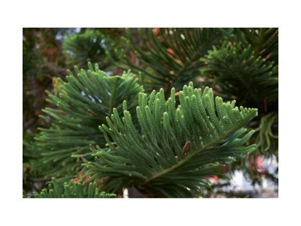

Araucaria heterophylla
Common Names: Norfolk Island Pine, Star Pine, Triangle Tree, Living Christmas Tree
Local Name: Araucaria (Tamil/Hindi)
Family: Araucariaceae
Origin: Norfolk Island (South Pacific)
Plant Type: Perennial evergreen conifer
Average Lifespan: 150+ years in natural habitat; decades in cultivation
| Growth Habit | Symmetrical, tiered horizontal branches; pyramidal form |
| Plant Size | Up to 50–65 meters in wild; 3–10 meters in cultivation |
| Leaves | Awl-shaped, overlapping, bright green; 1–2 cm long on young trees |
| Root System | Deep taproot; sensitive to transplanting |
| Climate | Tropical to subtropical coastal; tolerates mild frost briefly |
| Temperature Range | 15–30°C ideal |
| Soil Type | Well-drained sandy or loamy soil; tolerates coastal conditions |
| Soil pH Preference | 4.5–6.0 |
| Sun Requirement | Full sun to bright indirect light |
| Water Requirement | Moderate; allow soil to dry slightly between watering |
| Can it Grow in Pots? | Yes; popular indoor plant when young |
| Fertilizer Schedule | Monthly during growing season with balanced fertilizer |
| Pruning Time | Avoid pruning; do not cut the central leader |
| Common Pests | Mealybugs, scale insects, spider mites |
| Common Diseases | Root rot from overwatering; needle blight |
| Propagation by Seeds | Seeds germinate in 2–4 weeks; viability short-lived |
| Propagation by Cuttings | Terminal cuttings only; side shoots grow asymmetrically |
| Water Usage | Moderate; tolerates coastal salt spray |
| Biodiversity Benefits | Provides nesting sites for birds; windbreak in coastal areas |
Add your field observations here.